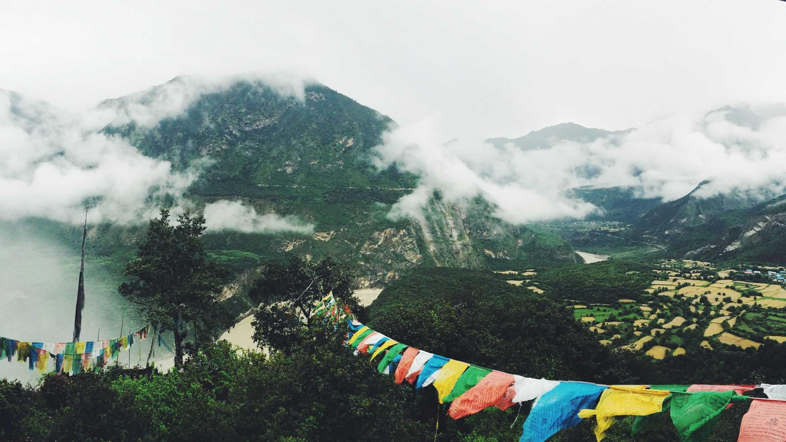
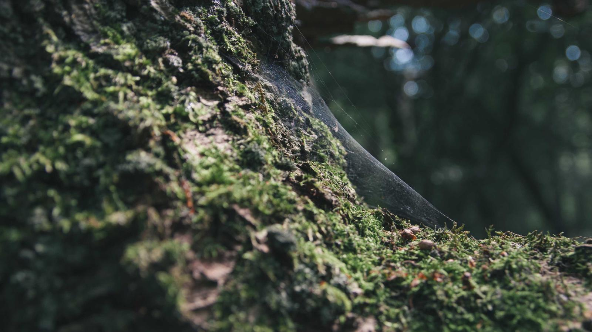
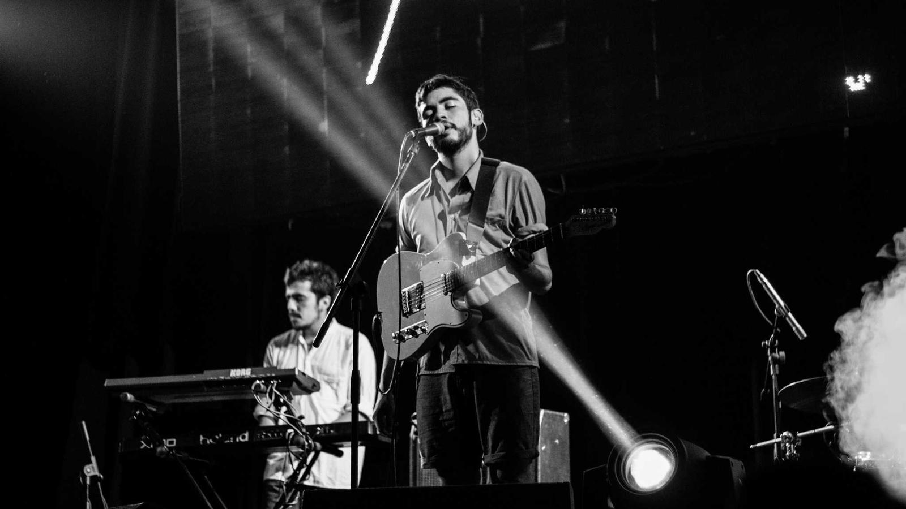

Paris
FranceHome to the Eiffel Tower, world-class museums, and cozy riverside cafés. Best visited in spring when the city blooms. Whether it is your first time or your tenth, Paris always finds a way to surprise you.
View Photos →Three places worth putting on your list. From the emerald rice terraces of Indonesia to the historic streets of Paris, find the location that calls to you.

Home to the Eiffel Tower, world-class museums, and cozy riverside cafés. Best visited in spring when the city blooms. Whether it is your first time or your tenth, Paris always finds a way to surprise you.
View Photos →
Emerald rice terraces, warm turquoise water, and a laid-back island pace that's hard to leave behind. A haven for those seeking both adventure and profound stillness.
View Photos →
Wander through ancient temples, quiet bamboo groves, and streets lined with cherry blossoms in spring. A city where time slows down to match the rhythm of nature.
View Photos →